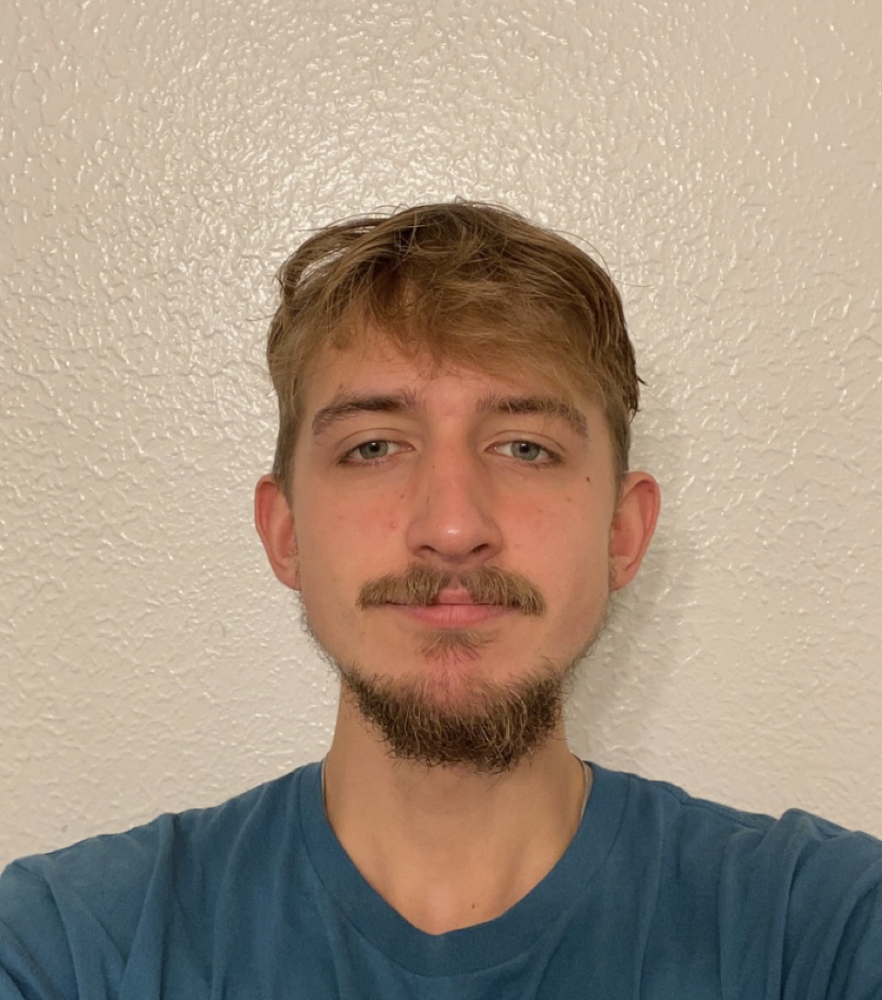

It was a nickname for me for as long as I can remember.

I currently have no web development experience, though I am willing and excited to learn everything I can throughout this term in CS 290.
I hope to learn how to confidently use the skills I will gain in this class to create a websites and web applications in the future, as well as getting more familiar with the ins and outs of VSCode.
Additionally, I hope to become more used to learning and using languages that I am not used to (like when we eventually get to python integration in this class).
I have signed up for Campuswire.
Recently, I've been very active in the Super Smash Bros. Melee esports scene here in Corvallis and I feel its a very unique enviorment and leads to a lot of unique experiences that you can't really find with most other clubs or even esports communities in Oregon. Everyone is extremely passionate about improving, and its nice to see good competition where everyone wants to see everyone else improve. It's led to alot of good friendships and hype moments that I feel you don't get if you're playing a game that's online.
secret stash, dont click